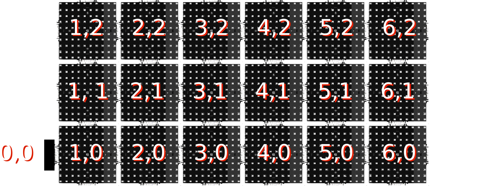
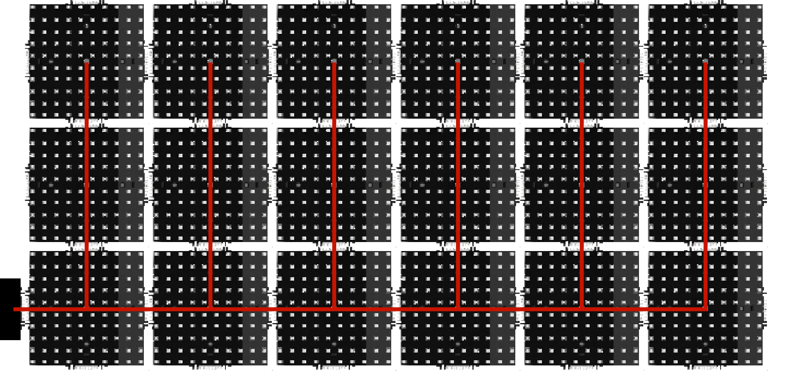

Exposition MP2013
SquareWave
Jeu de la vie
Cellule morte
Cellule vivante
Si vivante:
Init
Run
Step
Stop
Cellule vivante
Si vivante:
- Reste vivante si 2 ou 3 voisins vivants
- Devient vivante si exactement 3 voisins vivants
Automate Interne

Comparaison avec l'existant


Calcul de Coordonnées: Théorie
Calcul de Coordonnées: Code
// État
int x;
int y;
bool ok; // Programme
void init() { if(relay == true) {
x = 0;
y = 0;
ok = true;
}
else
ok = false; }
void loop() { if (in[DOWN].ok == true && ok == false) {
x = in[DOWN].x ;
y = in[DOWN].y + 1;
ok = true;
} else if (in[LEFT].ok == true && ok == false) {
x = in[LEFT].x + 1;
y = in[LEFT].y;
ok = true;
}
else if (in[UP].ok == true && ok == false) {
x = in[UP].x;
y = in[UP] - 1;
ok = true;
}
else if (in[RIGHT].ok == true && ok == false) {
x = in[RIGHT].x - 1;
y = in[RIGHT].y;
ok = true;
} for(unsigned i = 0; i < 4; i++) {
out[i].x = x;
out[i].y = y;
out[i].ok = ok;
} } Calcul de Coordonnées
Init Root Run Step StopArbre couvrant: Théorie
Arbre Couvrant: Code
// État interne
int distance;
int father;
bool children[4]; // État pour les voisins
int distance;
bool father; // Programme
void init() { if(relay == true)
distance = 0;
else
distance = -1;
father = -1;
for(unsigned i = 0; i < 4; i++)
children[i] = false;}
void loop() { if(relay == false) { for(unsigned i = 0; i < 4; i++) {
if(in[i].distance != -1) {
father = i;
distance = in[i].distance + 1;
}
if(in[i].father == true)
children[i] = true;
else
children[i] = false;
} } for(unsigned i = 0; i < 4; i++) {
if(father == i)
out[i].father = true;
else
out[i].father = false;
out[i].distance = distance;
} }